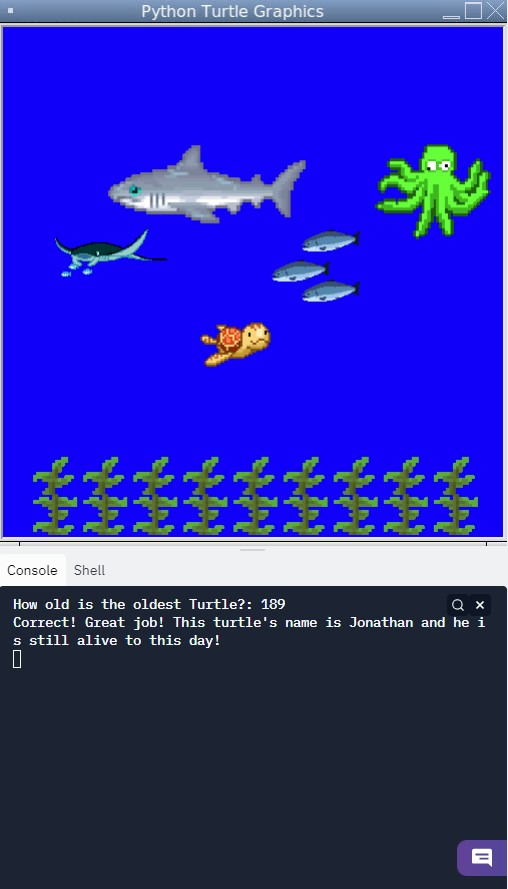
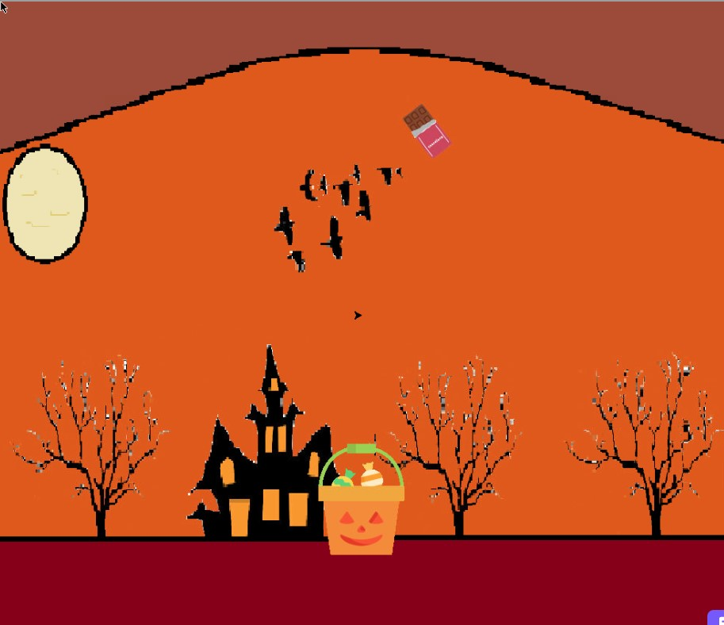
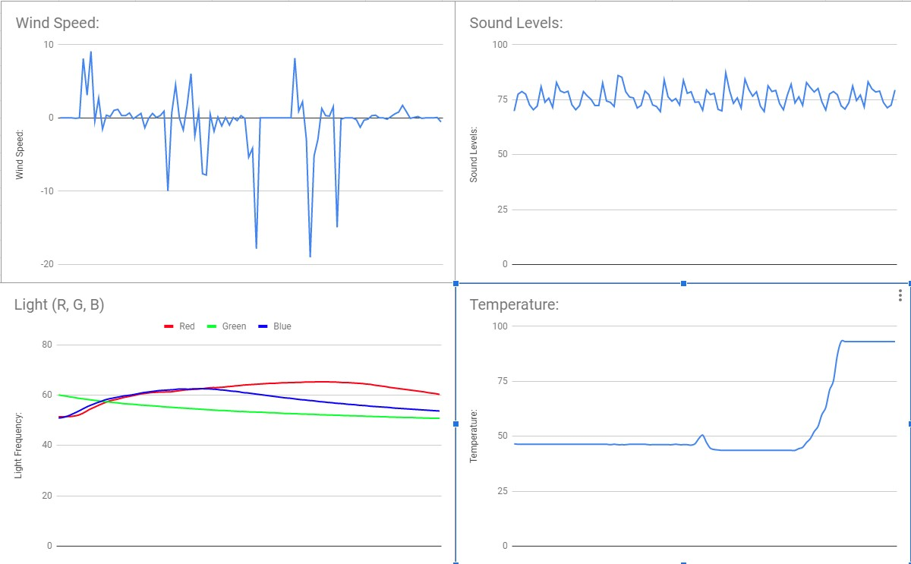
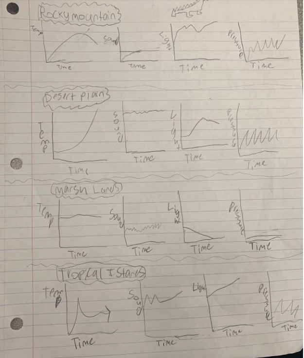
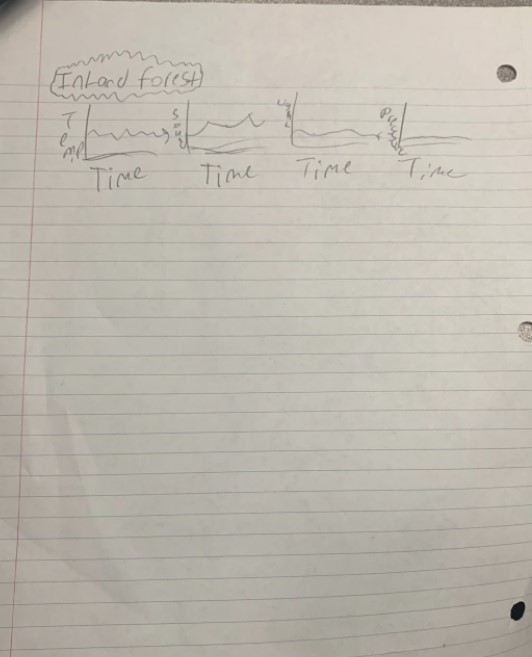
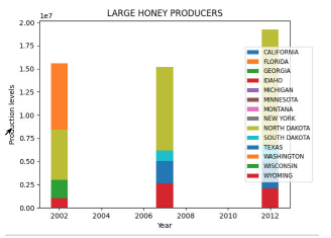
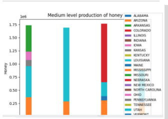
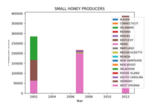
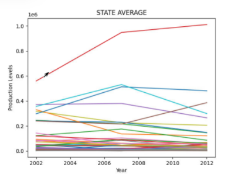
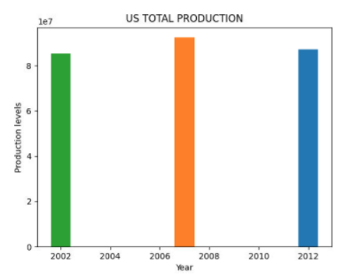

Portfolio
Home
Portfolio
About Me
This is my portfolio!
Curious Turtle in the Ocean

This is a curious sea turtle who is surrounded by life. The program starts with the question, "How old is the oldest turtle?" If you answer 189, the correct answer, the turtle will appear with life around it and you will get a response of, "Correct! Great job! This turtle's name is Jonathan and he is still alive to this day!" If you answer with any other number, you will get the response of, "Wrong! The oldest turtle to ever live is 189 years old.This turtle was born in 1832 and is the oldest known land animal still living to this day."
Candy Catch Game

This is a dropper-like game where you drop candies into a bucket. When clicking on the screen, the candy will fall to the ground. If the candy hits the ground, you get +1 score, the candy will reset to its original location and a new candy will pop up, and the bucket will move to a random location on the screen. If you miss the bucket, the candy will dissapear and the text, "Game Over" will pop up.
This is a clicker game with a Halloween theme. Whenever you click the pumpkin on the screen, you will get money. There are also upgrades in the game which helps you get even more money. So the more upgrades you buy, the more money you get. Also, all the sprites have an animation and there is background music.
PLTW 3.1.6 Project



We concluded that the rover is recording data in the rocky mountains because the temperatures inflate and deflate drastically and a low yet constant wind speed.
PLTW 3.2.4 Project





We used the US honey production for our project. We used the data given to us to make multiple graphs, showing data based of average honey production by state, small, medium, and large honey producers, and the total US honey produced. The graphs that we made were bar and line graphs.
PLTW 4.1.4 Project